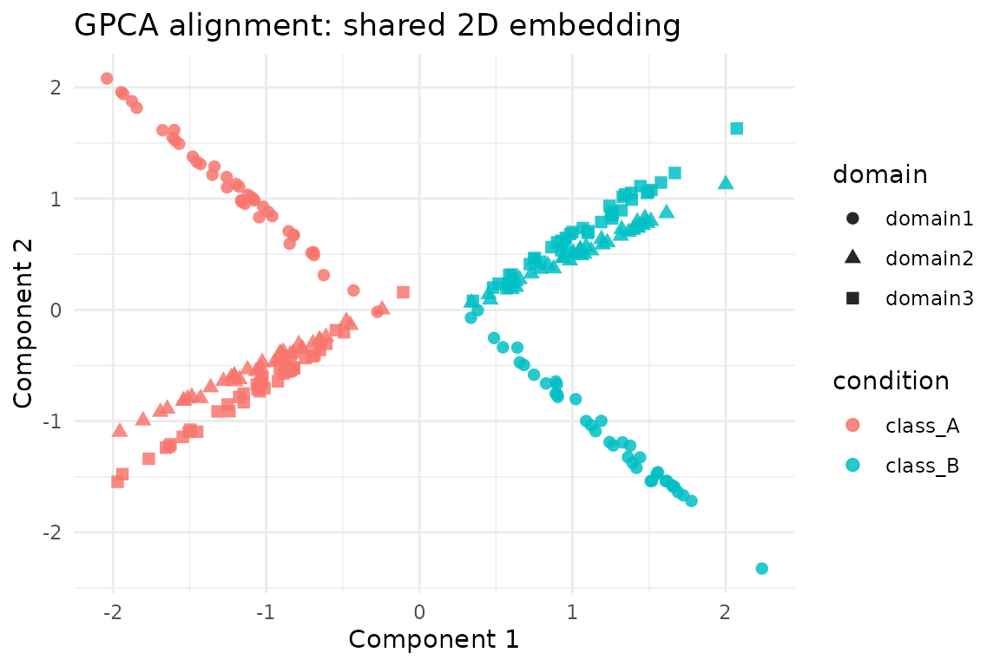

Overview
gpca_align() implements Generalized PCA alignment. It
constructs a coupled metric across domains and then solves a generalized
PCA problem to obtain a shared latent embedding. The helper
gpca_align_control() exposes safeguards for graph
sparsification, label balancing and dense-matrix memory limits, making
it practical on real data.
This vignette walks through a minimal pipeline:
- Load a reusable hyperdesign dataset with three related domains.
- Run
gpca_align()and inspect the aligned scores. - Tune graph sparsity and balancing with
gpca_align_control().
The code below only relies on public package APIs, so you can copy–paste it when exploring your own data.
Constructing a Hyperdesign
We reuse the packaged benchmark dataset so every alignment vignette operates on identical inputs. It contains three domains with two latent classes and moderate domain-specific transformations.
alignment_benchmark <- manifoldalign::alignment_benchmark
domain_list <- lapply(alignment_benchmark$domains, function(dom) {
multidesign(dom$x, dom$design)
})
hd <- hyperdesign(domain_list)
labels <- alignment_benchmark$labels
domain_names <- names(domain_list)
domain_sizes <- vapply(domain_list, function(dom) nrow(dom$x), integer(1))When data is a hyperdesign, call
gpca_align() and supply the label column name via the
y argument.
base_preproc <- replicate(length(domain_names), multivarious::pass(), simplify = FALSE)
gpca_fit <- gpca_align(
hd,
y = condition,
ncomp = 2,
u = 0.6, # balance within/between alignment
lambda = 1e-2, # light ridge regularisation
preproc = base_preproc
)
str(gpca_fit, max.level = 1)
#> List of 6
#> $ v : num [1:12, 1:2] -0.342 -0.361 -0.294 -0.246 -0.306 ...
#> ..- attr(*, "dimnames")=List of 2
#> $ preproc :List of 2
#> ..- attr(*, "class")= chr [1:2] "concat_pre_processor" "pre_processor"
#> $ s : num [1:240, 1:2] -0.112 -0.153 -0.161 -0.201 -0.148 ...
#> ..- attr(*, "dimnames")=List of 2
#> $ sdev : num [1:2] 5.94 5.22
#> $ block_indices:List of 3
#> $ labels : Factor w/ 2 levels "class_A","class_B": 1 1 1 1 1 1 1 1 1 1 ...
#> - attr(*, "class")= chr [1:5] "gpca_align" "multiblock_biprojector" "multiblock_projector" "bi_projector" ...
#> - attr(*, ".cache")=<environment: 0x559a2f926d90>
rms_alignment(as.matrix(gpca_fit$s), domain_sizes, domain_names)
#> # A tibble: 3 × 3
#> domain_i domain_j rms
#> <chr> <chr> <dbl>
#> 1 domain1 domain2 0.205
#> 2 domain1 domain3 0.231
#> 3 domain2 domain3 0.0333The result is a multiblock_biprojector, so we can
extract scores and feature loadings just like other
multivarious models. For plotting below we z-score the
aligned scores so that the scale matches other vignettes.
You can optionally pass a domain-specific preprocessing list (e.g.
list(center(), center(), center())) if you want to centre
or scale each block before alignment. Passing the
base_preproc list (built above with
multivarious::pass()) keeps preprocessing as the
identity—which keeps this example lightweight while still supporting
different feature dimensions.
score_tbl <- as_tibble(zscore_columns(as.matrix(gpca_fit$s)), .name_repair = "minimal")
colnames(score_tbl) <- paste0("comp", seq_len(ncol(score_tbl)))
scores <- score_tbl %>%
mutate(
sample = seq_len(nrow(.)),
domain = rep(domain_names, times = domain_sizes),
condition = rep(labels, length(domain_names))
)
head(scores)
#> # A tibble: 6 × 5
#> comp1 comp2 sample domain condition
#> <dbl> <dbl> <int> <chr> <fct>
#> 1 -0.819 0.674 1 domain1 class_A
#> 2 -1.48 1.38 2 domain1 class_A
#> 3 -1.18 1.11 3 domain1 class_A
#> 4 -1.95 1.96 4 domain1 class_A
#> 5 -1.08 0.997 5 domain1 class_A
#> 6 -1.45 1.33 6 domain1 class_AVisualising the Shared Embedding
ggplot(scores, aes(x = comp1, y = comp2, colour = condition, shape = domain)) +
geom_point(size = 2.2, alpha = 0.85) +
labs(
title = "GPCA alignment: shared 2D embedding",
x = "Component 1",
y = "Component 2"
) +
theme_minimal()
Controlling Graph Sparsification and Balancing
The optional control argument feeds through to
gpca_align_control(), letting you adjust k-NN
sparsification, label balancing and memory caps. Here we build a denser
within-domain graph but down-weight the majority class via label
balancing.
ctrl <- gpca_align_control(
knn = 10,
knn_mode = "mutual",
balance = "within",
balance_power = 0.5,
normalize = "edges",
verbose = FALSE
)
gpca_dense <- gpca_align(
hd,
y = condition,
ncomp = 2,
control = ctrl,
preproc = base_preproc
)
summary(gpca_dense$sdev)
#> Min. 1st Qu. Median Mean 3rd Qu. Max.
#> 5.633 5.703 5.773 5.773 5.843 5.912When working with larger domains, consider leaving
knn = NA (the default) to use fully dense metrics or lower
the max_dense_elems parameter to enforce a safe memory
ceiling. If gpca_align() detects that densifying the block
matrix would exceed the limit, it aborts with a diagnostic message so
you can tighten the sparsification or dimensionality reduction
beforehand.
Next Steps
-
gpca_align()returns a standardmultivariousprojector, so you can callpredict()on new samples (viamultivarious::multiblock_biprojector). - The RMS alignment summary above shows how closely each domain pair agrees in the coupled space; values near zero indicate strong agreement.
- Use
gpca_align_control()to add sparsification or label balancing when operating at larger scale. - Pair
gpca_align()withkema()orgrasp()in the same pipeline to compare linear vs kernel alignment strategies.
This vignette is intentionally lightweight—swap in your own domains or expand chunks to benchmark larger settings.